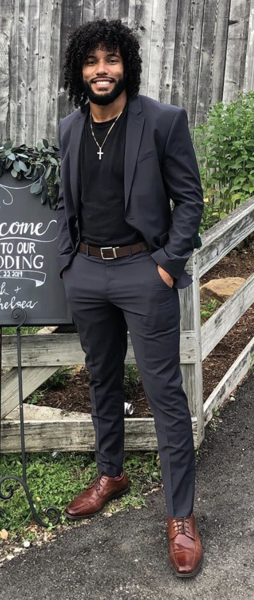

About Me
I was born and raised in Edison, NJ and moved to Miami in '07 and have been here ever since minus the 4 or so years I was in college in Iowa. I have always taken a keen liking to all types of art imaginable;from music to painting to digital, there is something I love about each and every form of art. Unfortunately, the degree I went to school for is something completely opposite of art (Business Administration) so I wasn't really happy with what I went to school for. I knew something had to change in order for me to be happy so I decided to go back to school and am currently a student for FIRST Institute, based out of Orlando, Florida for Graphic Design & Web Development. Although this wasn't the art that I had envisioned myself making in the future, I am glad I took the step forward and am actually having quite a bit of fun on this journey. We are learning a little bit of everything so that's really awesome and a good way to branch out for all future projects. I have a lot of ideas in mind and can't wait to display them for everyone to see!